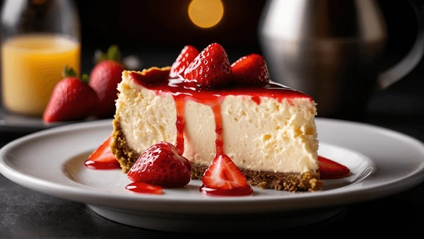

Home
Churro Cheesecake Bites

Description
You will love these churro cheesecake bites if you ever loved churros (or cinnamon toast) as a child (or still do
as an adult!). Cupcake-sized treats of cinnamon cheesecake over a crust of crunchy cinnamon cereal, this hits
all the comfort levels for a delicious fall treat.
Ingredients
- 12 cupcake liners
- 1 1/2 cups cinnamon cereal, suchc as Cinnamon Toast Crunch
- 1/8 cup butter, melted
- 1 (8-ounce) package cream cheese, softed
- 1/2 cup white sugar
- 2 tablespoons sour cream
- 2 medium eggs
- 1/2 teaspoon vanilla extract
- 1 1/3 teaspoons ground cinammon
Steps
- Gather all ingredients. Preheat the oven to 325 degrees F (165 degrees C). Line a standard 12-count cupcake
tin with cupcake liners; set aside.
- Place cereal in a gallon-size resealable plastic bag and reseal. Using a rolling pin, roll over the bag to
crush the cereal into fine crumbs. Pour cereal into a bowl.
- Pour melted butter over cereal. Using a fork or clean hands, mix butter into cereal until well combined.
- Scoop a large spoonful of cereal mixture into each cupcake liner; press down to form a crust. Add more to each liner until cereal mixture is evenly divided Set aside.
- Add cream cheese to a mixing bowl. Beat on medium to low speed with an electric mixer until cream cheese is fluffy and no large lumps are left. Add sugar, then beat until smooth; beat in sour cream. Add the eggs, 1 at a time, mixing completely before adding the next one. Mix in vanilla and cinnamon.
- Gently pour the batter over the cereal filled liners, a little at a time until each one is about half way full and all the batter is used.
- Bake in the preheated oven until batter is set, about 20 minutes. The cheescakes should jiggle just slightly when the pan is gently shaken.
- Let cool for about 15 minutes, then top each one with a piece of cereal. Chill in the refrigerator before serving.